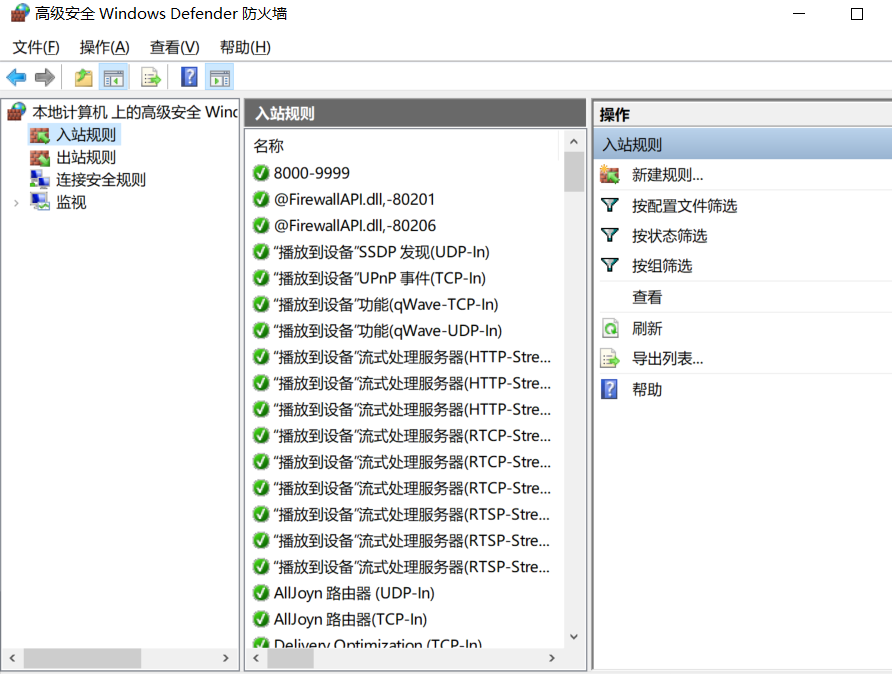
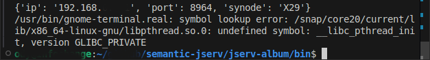

Troubleshootings
Failed to install portfolio-synode
Error:
ERROR: Could not find a version that satisfies the requirement anson.py3 (from portfolio-synode) (from versions: none)
Portfolio-synode requires a module which is still not published in PyPI. Install with this command:
pip install –index-url https://test.pypi.org/simple –extra-index-url https://pypi.org/simple anson.py3
If have to remove a package installed by a previous python version, e.g. installed by python 3.9, uninstall it with:
pip3.9 uninstall portfolio-synode
Windows Network Firewall / Defender
For Windows with Firewall enabled, please make sure your filewall settings allow the port you configured.
{kind=link}


Run with VS Code in Linux
Only tested in Ubuntu 24.04
To run Portfolio-synode from VS Code terminal in Ubuntu / Linux will result in errors like the report #179274.
{kind=link}
This error can be avoid by running like this:
export GTK_PATH= && python3 -m portfolio-synode
which is strongly discuraged as this is not fully tested.
Trouble by Ubuntu auto update
Only happens on Linux with auto-update enabled
If the system service configured on Linux (tested on Ubuntu 24.0.4) is using the JDK managed by system auto-updating, there will be error if the running service’s JDK version is different from the latest version.
Here is the service log:
Incorrect Java version: 21.0.7+6-Ubuntu-0ubuntu124.04
jspawnhelper version 21.0.8+9-Ubuntu-0ubuntu124.04.1
This command is not for general use and should only be run as the result of a call to
ProcessBuilder.start() or Runtime.exec() in a java application
java.io.IOException: Cannot run program "exiftool": error=0, Failed to exec spawn helper: pid: >
at java.base/java.lang.ProcessBuilder.start(ProcessBuilder.java:1170)
at java.base/java.lang.ProcessBuilder.start(ProcessBuilder.java:1089)
at java.base/java.lang.Runtime.exec(Runtime.java:681)
at java.base/java.lang.Runtime.exec(Runtime.java:530)
at io.oz.album.helpers.Exiftool.parse(Exiftool.java:117)
at io.oz.album.helpers.Exiftool.parseExif(Exiftool.java:62)
at io.oz.syntier.serv.DocreateHandler.onCreate(DocreateHandler.java:57)
at io.oz.jserv.docs.syn.ExpDoctier.lambda$endBlock$1(ExpDoctier.java:417)
at java.base/java.lang.Thread.run(Thread.java:1583)
Caused by: java.io.IOException: error=0, Failed to exec spawn helper: pid: 546376, exit value: 1
at java.base/java.lang.ProcessImpl.forkAndExec(Native Method)
at java.base/java.lang.ProcessImpl.<init>(ProcessImpl.java:295)
at java.base/java.lang.ProcessImpl.start(ProcessImpl.java:225)
at java.base/java.lang.ProcessBuilder.start(ProcessBuilder.java:1126)
... 8 more
The running JDK is an old version, 20.0.7_6, that will spawn a process using a newer version, 21.0.8+9. When jspawnhelper enhanced the version check [1], the exiftool process will fail.
The Apt changelog:
openjdk-21 (21.0.8+9~us1-0ubuntu1~24.04.1) noble-security; urgency=medium
* Upload to Ubuntu 24.04.
* CVEs:
- CVE-2025-50059, 8350991: Improve HTTP client header handling
- CVE-2025-30749, 8348989: Better Glyph drawing
- CVE-2025-50106, 8360147: Better Glyph drawing redux
- CVE-2025-30754, 8349594: Enhance TLS protocol support
* Security fixes:
- 8349111: Enhance Swing supports
- 8345625: Better HTTP connections
-- Vladimir Petko <vladimir.petko@canonical.com> Thu, 17 Jul 2025 09:55:59 +1200
...
openjdk-21 (21.0.7+6-1) unstable; urgency=high
* OpenJDK 21.0.7 release, build 6.
- Addresses CVE-2025-30698, CVE-2025-30691, CVE-2025-21587.
* Honour DEB_BUILD_OPTIONS=parallel=N while running jtreg tests (Helmut
Grohne). Addresses: #1095920.
-- Matthias Klose <doko@ubuntu.com> Thu, 24 Apr 2025 01:57:46 +0200
- [1] Improve jspawnhelper version checks, JDK-8325621, Affects Version/s: 11, 17, 21, 22, 23,